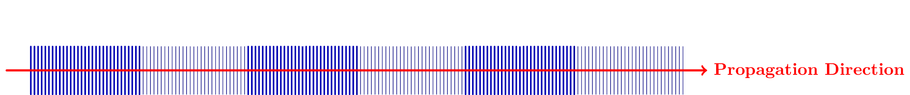
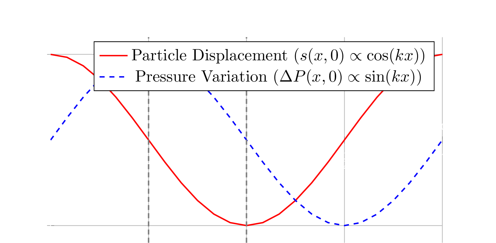
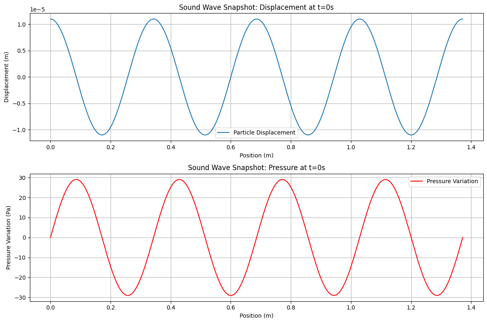

It’s a bustling afternoon, and just like any normal day, you notice the world around you is alive with unseen forces. One moment, your phone buzzes with an incoming message, resting silently on the table, yet creating a distinct tremor. As you listen to your favorite song, the bass vibrates through your chest—a tangible presence from an invisible source. Careless as you might be in passing it off as trivial, your body isn’t joking about it: in that instant, your ears and skin were tuned into a symphony of pressure and rarefaction, a delicate ballet of particles that carried information and energy. This is what we call sound.
Defining Sound: How it Occurs and What Induces It
Sound, those subtle whispers and powerful roars, may seem magical, but it’s pure classical physics. In physical terms, sound is a mechanical vibration that propagates through an elastic medium as a longitudinal wave. When an object oscillates, it pushes and pulls on surrounding particles (such as ambient air molecules), generating alternating regions of increased local density and pressure (compressions) and reduced density and pressure (rarefactions).
These compressions and rarefactions travel outward through the medium, transporting kinetic and potential energy without displacing the net matter permanently. Ancient Greek philosopher Pythagoras was among the first to formalize acoustic relationships, discovering that the tension and length of a vibrating string determined its discrete pitch. The science was later termed acoustics, derived from the Greek root akouein, meaning "to hear."

The medium is indispensable for mechanical wave propagation. Sound requires particle-to-particle collisions to transmit momentum:
- Vacuum of space: Absolute silence reigns because no particles exist to collide and propagate momentum.
- Air ($20^\circ\text{C}$): Acoustic velocity is approximately $v \approx 343\text{ m/s}$.
- Water: Being denser and possessing higher bulk modulus, sound propagates over $4\times$ faster at $v \approx 1,480\text{ m/s}$, enabling cetaceans (whales) to communicate across ocean basins.
- Solids (Steel, Granite): Dense atomic lattice bonds transmit shear and longitudinal strains exceeding $5,000\text{ m/s}$.
Temperature also directly controls propagation velocity. In ideal gases, the speed of sound $v$ scales with absolute thermodynamic temperature $T$:
$$v = \sqrt{\frac{\gamma R T}{M}}$$where $\gamma$ is the adiabatic index (heat capacity ratio, $\gamma \approx 1.4$ for diatomic air), $R$ is the universal gas constant, and $M$ is the molar mass of the gas. Warmer air molecules possess higher root-mean-square thermal velocities, passing momentum impulses more rapidly to neighboring particles.
How Sound Affects Our Daily Lives
Acoustic phenomena govern both artistic expression and everyday engineering. Inside a violin or acoustic guitar, a vibrating string drives the wooden soundboard and internal air cavity into resonance, amplifying weak string vibrations into rich acoustic output. In a symphonic orchestra, hundreds of instruments project harmonic frequencies that undergo constructive and destructive interference, creating a dynamic, multidimensional soundscape.
The energy scale of sound spans many orders of magnitude:
- A human whisper delivers an acoustic power of mere picowatts ($10^{-12}\text{ W}$).
- Normal human conversational speech operates near microwatts ($10^{-6}\text{ W}$).
- A roaring turbojet engine radiates over $100,000\text{ Watts}$ of raw acoustic power.
Beyond hearing, engineering applies ultrasound ($f > 20\text{ kHz}$) in diagnostic medical imaging to track cardiovascular blood velocity via Doppler shifts, oceanic sonar to chart submarine trenches, and non-destructive testing (NDT) to detect microscopic fractures inside aircraft titanium wings.
How Many Decibels Can Cause Damage? (Quantitative Analysis)
Imagine standing in the front row of a massive rock concert. The subwoofers rumble, rattling the floor and vibrating your sternum. While music at moderate volume is exhilarating, you might wonder: At what exact mathematical threshold does sound cease being thrilling and become physiologically dangerous?
In audiology, prolonged exposure to $120\text{ decibels (dB)}$ is recognized as the threshold of pain, capable of inducing immediate acoustic trauma and cochlear hair-cell destruction. Let us solve this from first principles using continuum wave mechanics and calculus.
Consider a harmonic plane sound wave traveling in the positive $x$-direction. The longitudinal particle displacement $s(x, t)$ from equilibrium is given by:
$$s(x, t) = s_{\text{max}} \cos(kx - \omega t)$$
where:
• $s_{\text{max}}$ is the maximum particle displacement amplitude.
• $k = \frac{2\pi}{\lambda} = \frac{\omega}{v}$ is the spatial wave number.
• $\omega = 2\pi f$ is the angular frequency.
By Newton's second law applied to an incremental fluid element with volume equilibrium bulk modulus $B = \rho v^2$, the local acoustic pressure deviation $\Delta P(x, t)$ is proportional to the negative spatial displacement gradient (rate of strain):
$$\Delta P(x, t) = -B \frac{\partial s}{\partial x} = -\rho v^2 \frac{\partial s}{\partial x}$$Differentiating $s(x, t)$ with respect to position $x$:
$$\frac{\partial s}{\partial x} = \frac{\partial}{\partial x}\left[s_{\text{max}} \cos(kx - \omega t)\right] = -s_{\text{max}} k \sin(kx - \omega t)$$Substituting this derivative back into the acoustic pressure equation:
$$\Delta P(x, t) = -\rho v^2 \left[-s_{\text{max}} k \sin(kx - \omega t)\right] = \left(\rho v^2 s_{\text{max}} k\right) \sin(kx - \omega t)$$Hence, the maximum pressure amplitude $\Delta P_{\text{max}}$ is:
$$\Delta P_{\text{max}} = \rho v^2 s_{\text{max}} k$$Notice the fundamental $90^\circ$ ($\pi/2\text{ rad}$) spatial phase difference: maximum compression ($\Delta P = \pm \Delta P_{\text{max}}$) occurs precisely where particle displacement is zero ($s = 0$).
The time-averaged acoustic sound intensity $I$ (power per unit area, $\text{W/m}^2$) is:
$$I = \frac{(\Delta P_{\text{max}})^2}{2\rho v}$$where $\rho = 1.225\text{ kg/m}^3$ (density of air at sea level and $20^\circ\text{C}$) and $v = 343\text{ m/s}$.
The sound level $\beta$ in decibels ($\text{dB}$) is defined logarithmically relative to the reference threshold of human hearing ($I_0 = 10^{-12}\text{ W/m}^2$):
$$\beta = 10 \log_{10}\left(\frac{I}{I_0}\right)$$Setting $\beta = 120\text{ dB}$:
$$120 = 10 \log_{10}\left(\frac{I}{10^{-12}\text{ W/m}^2}\right) \implies 12 = \log_{10}\left(\frac{I}{10^{-12}}\right)$$ $$10^{12} = \frac{I}{10^{-12}} \implies I = 10^{12} \times 10^{-12} = 1.0\text{ W/m}^2$$Now, we compute the maximum pressure variation $\Delta P_{\text{max}}$ generated by this $1\text{ W/m}^2$ wave:
$$\Delta P_{\text{max}} = \sqrt{2 \rho v I} = \sqrt{2 \times \left(1.225\text{ kg/m}^3\right) \times \left(343\text{ m/s}\right) \times \left(1.0\text{ W/m}^2\right)}$$ $$\Delta P_{\text{max}} = \sqrt{840.35}\text{ Pa} \approx 28.98\text{ Pa}$$Finally, let us calculate the physical particle oscillation amplitude $s_{\text{max}}$ for a standard diagnostic pitch of $f = 1000\text{ Hz}$:
$$\omega = 2\pi(1000\text{ s}^{-1}) \approx 6283.18\text{ rad/s}, \quad k = \frac{\omega}{v} = \frac{6283.18}{343} \approx 18.32\text{ m}^{-1}$$ $$s_{\text{max}} = \frac{\Delta P_{\text{max}}}{\rho v^2 k} = \frac{28.98\text{ Pa}}{1.225 \times (343)^2 \times 18.32} \approx 1.1 \times 10^{-5}\text{ m} = 11\ \mu\text{m}$$Remarkable physical insight: Air molecules are oscillating back and forth by a mere $11\text{ micrometers}$—approximately the diameter of a single red blood cell! The human ear is so astonishingly sensitive that a microscopic displacement of $11\ \mu\text{m}$ marks the boundary between hearing and severe physiological pain.
Computational Analysis: Simulating the Sound Wave
Beyond analytical derivations, computational acoustics enables us to visualize wave propagation and numerical phase relationships. Using Python with numpy and matplotlib, we simulate the spatial snapshot of particle displacement and pressure fluctuation across multiple wavelengths.

import numpy as np
import matplotlib.pyplot as plt
# --- Physical Constants for Air at Room Temperature (20°C) ---
rho = 1.225 # kg/m^3 (density of air)
v = 343.0 # m/s (speed of sound)
# --- Wave Parameters from Quantitative Calculation ---
s_max = 1.1e-5 # meters (maximum particle displacement amplitude)
frequency = 1000 # Hz (acoustic pitch)
omega = 2 * np.pi * frequency # Angular frequency (rad/s)
k = omega / v # Wave number (rad/m)
# Peak pressure variation from derived equation: Delta P_max = rho * v^2 * s_max * k
delta_P_max = rho * (v ** 2) * s_max * k
print(f"Sound Wave Simulation (Threshold of Pain: 120 dB)")
print(f"Displacement Amplitude (s_max): {s_max:.2e} m (11 micrometers)")
print(f"Calculated Pressure Amplitude: {delta_P_max:.2f} Pa")
# --- Spatial Domain (Snapshot over 4 full wavelengths) ---
wavelength = v / frequency
x_values = np.linspace(0, 4 * wavelength, 1000)
t_snapshot = 0.0 # Instantaneous snapshot at t = 0
# --- Compute Wave Functions ---
s_values = s_max * np.cos(k * x_values - omega * t_snapshot)
delta_P_values = delta_P_max * np.sin(k * x_values - omega * t_snapshot)
# --- Plot Displacement & Pressure Waves ---
plt.figure(figsize=(12, 7))
plt.subplot(2, 1, 1)
plt.plot(x_values, s_values * 1e6, color='#528bf2', linewidth=2, label='Particle Displacement s(x, 0)')
plt.title('Acoustic Wave Snapshot: Particle Displacement vs Position', fontsize=12, fontweight='bold')
plt.ylabel('Displacement (µm)')
plt.grid(True, linestyle='--', alpha=0.5)
plt.legend(loc='upper right')
plt.subplot(2, 1, 2)
plt.plot(x_values, delta_P_values, color='#ef4444', linewidth=2, label='Pressure Variation ΔP(x, 0)')
plt.title('Acoustic Wave Snapshot: Pressure Variation vs Position', fontsize=12, fontweight='bold')
plt.xlabel('Position x (meters)')
plt.ylabel('Pressure ΔP (Pa)')
plt.grid(True, linestyle='--', alpha=0.5)
plt.legend(loc='upper right')
plt.tight_layout()
plt.show()
In spherical radiation from a point source, acoustic energy spreads over an area proportional to $4\pi r^2$, causing sound intensity to decay inversely with the square of distance ($I \propto 1/r^2$). On the logarithmic decibel scale, every doubling of distance from a point source reduces the sound level by exactly:
$$\Delta\beta = 10 \log_{10}\left(\frac{1}{2^2}\right) = -10 \log_{10}(4) \approx -6.02\text{ dB}$$
Conclusion
Even with the ubiquity of modern acoustic instruments, speech recognition algorithms, ultrasound diagnostics, and computational numerical models, sound remains one of the most elegant branches of classical mechanics. It seamlessly unites thermodynamics, fluid dynamics, calculus, and neurobiology.
The next time you listen to a musical chord or feel bass vibrations resonate through a floor, remember the physical choreography underway: trillions of microscopic particles oscillating by mere micrometers, translating mechanical energy into the symphony of the world around us.